|
The crafting skill can be used to make different things out of all sort of materials. Gems, gold bars, silver bars, leather and clay are all used in crafting. A similar table to the one below can be opened in the game by clicking the crafting skill icon in the stats menu.
|
Item |
Level |
Item |
Level |
Cut Opal
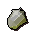 |
Level 1
Members only |
Leather gloves
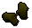 |
Level 1 |
Pot
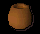 |
Level 1 |
Beer glass
|
Level 1
Members only |
Gold ring
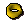 |
Level 5 |
Gold necklace
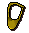 |
Level 6 |
Pie dish
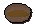 |
Level 7 |
Leather boots
|
Level 7 |
Gold amulet
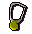 |
Level 8 |
Bowl
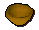 |
Level 8 |
Leather cowl
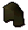 |
Level 9 |
Bow strings
|
Level 10
Members only |
Leather vambraces
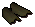 |
Level 11 |
Cut jade
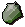 |
Level 13
Members only |
Leather armour
|
Level 14 |
Snail Shell
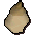 |
Level 15
Members only |
Holy symbol
|
Level 16 |
Cut red topaz
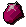 |
Level 16
Members only |
Unholy symbol
|
Level 17
Members only |
Leather chaps
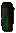 |
Level 18 |
Cut sapphire
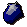 |
Level 20 |
Sapphire ring
|
Level 20 |
Sapphire necklace
|
Level 22 |
Sapphire amulet
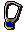 |
Level 24 |
Pot lid
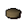 |
Level 25
Members only |
Cut emerald
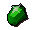 |
Level 27 |
Emerald ring
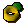 |
Level 27 |
Hard leather body
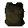 |
Level 28 |
Emerald necklace
|
Level 29 |
Emerald amulet
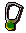 |
Level 31 |
Vials
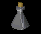 |
Level 33
Members only |
Cut ruby
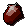 |
Level 34 |
Ruby ring
|
Level 34 |
Leather Coif
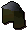 |
Level 38
Members only |
Ruby Necklace
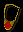 |
Level 40 |
Studded Body
 |
Level 41
Members only |
Cut Diamond
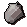 |
Level 43 |
Diamond ring
|
Level 43 |
Studded chaps
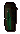 |
Level 44
Members only |
Staff orb
|
Level 46
Members only |
Ruby amulet
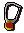 |
Level 50 |
Water battlestaff
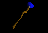 |
Level 54
Members only |
Cut dragonstone
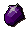 |
Level 55
Members only |
Dragonstone ring
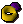 |
Level 55
Members only |
Diamond necklace
|
Level 56 |
Green Dragonhide vambraces
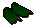 |
Level 57
Members only |
Earth battlestaff
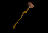 |
Level 58
Members only |
Green Dragonhide chaps
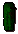 |
Level 60
Members only |
Fire battlestaff
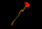 |
Level 62
Members only |
Green Dragonhide body
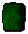 |
Level 63
Members only |
Air battlestaff
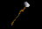 |
Level 66
Members only |
Blue Dragonhide vambraces
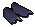 |
Level 66
Members only |
Blue Dragonhide chaps
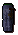 |
Level 68
Members only |
Diamond amulet
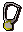 |
Level 70 |
Blue Dragonhide body
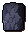 |
Level 71
Members only |
Dragonstone necklace
|
Level 72
Members only |
Red Dragonhide vambraces
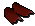 |
Level 73
Members only |
Red Dragonhide chaps
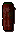 |
Level 75
Members only |
Red Dragonhide body
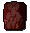 |
Level 77
Members only |
Black Dragonhide vambraces
|
Level 79
Members only |
Dragonstone amulet
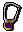 |
Level 80
Members only |
Black Dragonhide chaps
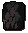 |
Level 82
Members only |
Black Dragonhide body
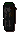 |
Level 84
Members only |
Pottery
Bowls, pots and pie dishes can all be made by crafting. Clay is obtained by mining.
To make the clay workable it needs to be softened first. Use a jug of water with the clay and it will be turned into soft clay. Take the clay to a potter's wheel. There is one in the barbarian village.
Use the clay on the potter's wheel and select what object you would like to make. If you have the correct crafting level you will make an unfired piece of pottery. If you want to make several of the same object, simply right-click and select the number you wish to produce. Use it on the pottery oven and as long as it doesn't crack upon heating, you will have made yourself a nice new piece of pottery. |
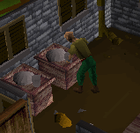 |
Leather
Leather is made from cowhides, so you will need to find a cow field and kill some cows.
| 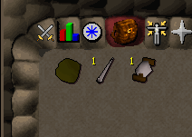 |
Once you have a cowhide, take it to the tannery in Al Kharid. You can then craft your leather into leather armour, boots or gloves. You will need to get a needle and some thread from a crafting shop. Right-click the needle in your inventory and use it on a piece of leather, then as long as you have some thread the screen below will be opened, and you will be given a choice of leather objects to make. |
Simply click on the item you want to make and if you have enough thread you will craft it. If you want to make several of the same object, simply right-click and select the number you wish to produce.
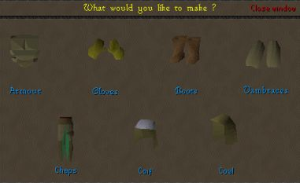
There are 3 types of leather - normal, hard and dragon. You are given the choice of either normal or hard leather when you get your cowhides converted by the tanner. Expect to pay a little more for hardened leather. Dragon leather is made in the same way as normal leather, except dragonhides are used instead of cowhides.
Kill a dragon to collect its hide, then speak to a tanner in the same way, and you get the option to make dragon leather if you have any dragonhides in your inventory. The cost for converting dragonhides is more expensive than hardened leather however. Use a needle and thread again and a smaller crafting display is shown with the items that you can craft from dragon leather.
Adding studs to a leather body or chaps increases its strength. Studs can be smithed from steel, then used with the leather item to make it studded. Studs can only be used on normal leather.
Gems
Gems are rare objects you will occasionally find, they can be made more valuable by cutting them. Once a gem is cut it can also be used when you are making gold jewelry.
You will need to buy a chisel from a general store or a crafting shop. Select the chisel from your inventory and then the gem you wish to cut. If you find your crafting level is not high enough to cut the gem you may want to make a bit more pottery or leather to raise your crafting level first.
Holy and Unholy symbols
|
You need a crafting level of 16 to craft silver bars. To make silver bars see the mining and smithing guides. You will need a holy symbol mould which can be bought from a crafting shop. Then use your silver bar on a furnace and you will be able to make a holy symbol of Saradomin. If you want to make several of the same object, simply right-click and select the number you wish to produce.
You can either sell your holy symbol to the general store or you can make it into an object that makes your prayers last longer. If you want to use your holy symbol you will need some string. To make string, buy a pair of shears from a general store. Use the shears on a sheep to get some wool. |
Use the wool on a spinning wheel to spin it into a ball. Then you can use your ball of wool on your holy symbol to give it a string. Finally you will need to get your holy symbol blessed. This can only be done by taking it to a monk called Brother Jered or by using a completed prayer book. Brother Jered is upstairs in the monastery. You will need a prayer level of 31 to get in to talk to him.
Runescape members may also come across an unholy symbol mould which can be used to make unholy symbols in the same way and requires a crafting level of 17 to use. When they get the mould they will also be told how to get their unholy symbols enchanted. |
|
Jewellery and amulets
|
To make gold bars see the mining and smithing guides. You can make amulets, necklaces and rings from gold bars. Buy the appropriate moulds from a crafting shop.
Use a gold bar on a furnace and select the object you would like to make. |
Putting gems in your gold jewellery can increase the smithing level required quite a lot, but it also increases the value of what you are making.
All the gold jewellery can be sold for a good price, but amulets and rings with jewels in them can also be enchanted at a high enough magic level to give various bonuses. First of all your amulet will need a string, this is made in the same way as the string for the holy amulets of Saradomin. Then it can be enchanted using the magic skill.
Glassmaking
Glassmaking is only available to RuneScape members.
Please subscribe to get this feature.
|
To make some glass, you will first need to get some seaweed. This can be obtained by big net fishing, or found on Entrana Island. Heat the seaweed to get soda ash.
Then use a bucket on a sandpit, to get a bucket of sand. With both soda ash and sand in your inventory, you can then use a furnace on either one to make molten glass. |
|
Use this molten glass with a glass-blowing pipe, which can also be found on Entrana. You will then be asked what object you would like to make. If you want to make several of the same object, simply right-click and select the number you wish to produce.
Bowstrings
|
Bowstrings can only be made on a members server.
Please subscribe to get this feature.
You can make bowstrings by using flax on a spinning wheel. If you want to make several of the same object, simply right-click and select the number you wish to produce.
Making bow strings gives a good amount of crafting experience and the bowstrings are useful for making bows (see the fletching guide.) |
Battlestaffs
Battlestaff crafting is only available to RuneScape members.
Please subscribe to get this feature.
First get an unpowered orb (see glassmaking).
You will need to enchant the orb. You can make fire orbs, earth orbs, water orbs and air orbs. Take an orb to a magic obelisk (either the obelisk of air, the obelisk of earth, the obelisk of water or the obelisk of fire) and cast the appropriate orb enchantment spell on the obelisk. This requires a high magic level (see magic guide). The obelisks are not in easily accesible areas.
Then buy a battlestaff from a staff shop on a members server. Use the battlestaff with a charged orb to make an elemental battlestaff.
The crafting levels needed to attach the orbs to the staffs are shown in the table at the top of this page.
Crafting Guild
The Crafting Guild can be entered by players who have a crafting level of at least 40 and who are wearing a brown apron. It is located west of Port Sarim and north of Rimmington.
Inside the Guild players will find a number of things to help them craft, including a pottery oven, potter's wheels, spinning wheels, a sink, a number of gold and silver rocks, as well as a tanner.
|